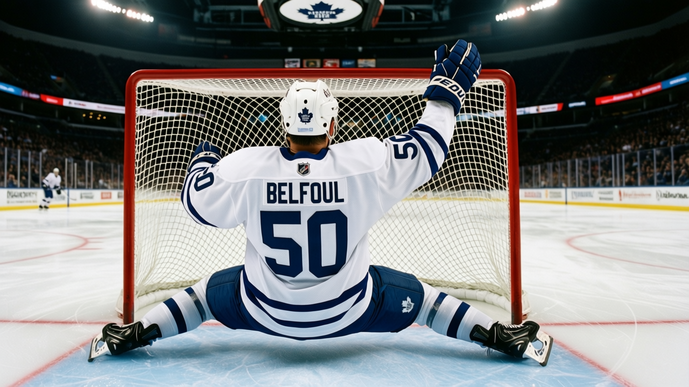

Leafs visit Vancouver with six straight wins and a blue line missing its anchor
Toronto leads the Northeast by 24 points and faces a Canucks team that has gone 12-5 at home without Ed Jovanovski
 Sam OkaforLeafs beat reporter · Queen City Telegram
Sam OkaforLeafs beat reporter · Queen City Telegram
 Toronto Maple Leafs arrives in Vancouver on Friday at 28-6-0, riding a 6-game win streak and a 12-3 record on the road.
Toronto Maple Leafs arrives in Vancouver on Friday at 28-6-0, riding a 6-game win streak and a 12-3 record on the road.  Vancouver Canucks sits at 20-10-4, 48 points, on a 3-game winning streak, and 12-5 in its own building. The one thing separating them from a real test is a knee.
Vancouver Canucks sits at 20-10-4, 48 points, on a 3-game winning streak, and 12-5 in its own building. The one thing separating them from a real test is a knee.
 Ed Jovanovski85, Vancouver's top defenseman at 85 overall, is out until 2005-02-19. The Canucks have managed 153 goals for and 131 against without him, but the blue line behind their top pairing is thin, and the streak they are riding is built against a mid-table schedule.
Ed Jovanovski85, Vancouver's top defenseman at 85 overall, is out until 2005-02-19. The Canucks have managed 153 goals for and 131 against without him, but the blue line behind their top pairing is thin, and the streak they are riding is built against a mid-table schedule.
 Ed Belfour93 took 25 shots in Edmonton on Tuesday night and gave up none. Toronto managed 17 of its own, the lowest shot total on the sheet this season, and still scored four times.
Ed Belfour93 took 25 shots in Edmonton on Tuesday night and gave up none. Toronto managed 17 of its own, the lowest shot total on the sheet this season, and still scored four times.
 Mats Sundin88 (48 points),
Mats Sundin88 (48 points),  Marian Gaborik97 (55),
Marian Gaborik97 (55),  Gary Roberts87 (46),
Gary Roberts87 (46),  Alexander Mogilny87 (47),
Alexander Mogilny87 (47),  Brad Richards86 (43), and
Brad Richards86 (43), and  Bryan McCabe83 (45) all sit at 43 points or more through 37 games. Six players at that rate is depth the Northeast does not have. Ottawa's top scorer is not close.
Bryan McCabe83 (45) all sit at 43 points or more through 37 games. Six players at that rate is depth the Northeast does not have. Ottawa's top scorer is not close.
Then New Jersey, back to back
Friday in Vancouver is the first of three games in five days. Toronto visits  New Jersey Devils on Sunday (1/3) and hosts the Devils on Monday (1/4). New Jersey is 18-8-3, 47 points, on a 2-game losing streak, with
New Jersey Devils on Sunday (1/3) and hosts the Devils on Monday (1/4). New Jersey is 18-8-3, 47 points, on a 2-game losing streak, with  Jamie Langenbrunner85 expected back from an ankle injury on 2004-12-30. The Devils are 11-6 at home and 11-5 on the road, and they give up 101 goals in 33 games, the fewest in the Atlantic Division.
Jamie Langenbrunner85 expected back from an ankle injury on 2004-12-30. The Devils are 11-6 at home and 11-5 on the road, and they give up 101 goals in 33 games, the fewest in the Atlantic Division.
Belfour has 13 starts,  David Aebischer86 19. After Tuesday's shutout the split is getting hard to defend.
David Aebischer86 19. After Tuesday's shutout the split is getting hard to defend.
| Date | Opponent | Venue |
|---|---|---|
| 2004-12-31 | Vancouver Canucks | Away |
| 2005-01-03 | New Jersey Devils | Away |
| 2005-01-04 | New Jersey Devils | Home |